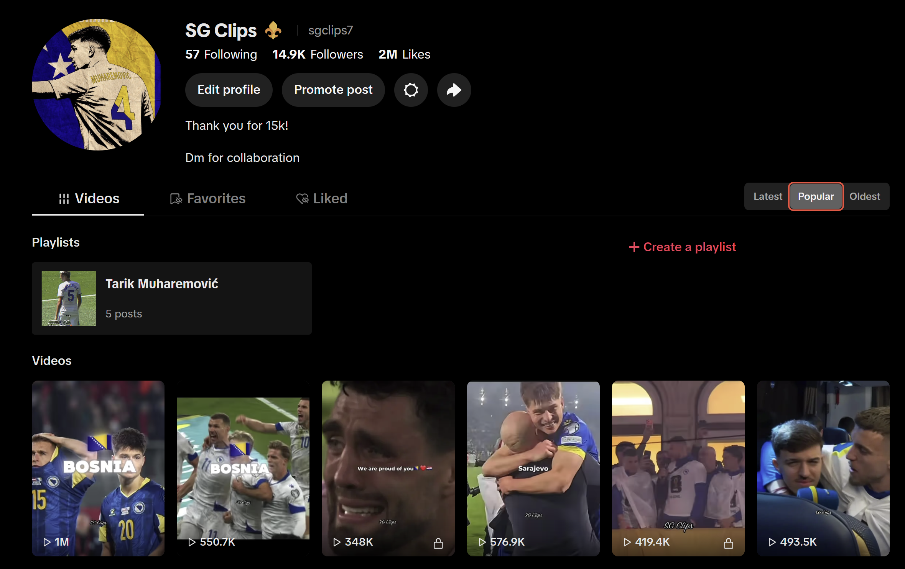

My Creative Statement

My name is Senid, and for the past two years I have been video editing about the Bosnian Soccer National Team. At that time, I was dealing with something personal and I needed something to inspire me. I decided why not post on social media, and every video I made helped me realize that I wanted to do something in the media field since it makes me happy.
Creating these videos gives me a way to express myself while also sharing something that I really care about. It helped me realize that I wanted to continue pushing myself and to expand my experience within the media field. I was inspired by a social media influencer by the name of Eldar Karic, and he started making Bosnian content, making me realize I wanted to do something similar.
This started as a hobby for me, but over the past year I realized I wanted to take this more seriously. In the future, I am hoping to be a part of sports media, but if that does not happen, all I care about is whether or not something makes me happy. Honestly, I am really passionate about doing something I love, and it took me some time to realize that I love doing media.
The thing I love the most about media is the possibility of inspiring people, and even expressing something that has been seen before. Overall, I am still learning and trying to improve, but I want to continue growing as a media creator and see where the media field will take me in the near future.
Read my three reading reflections